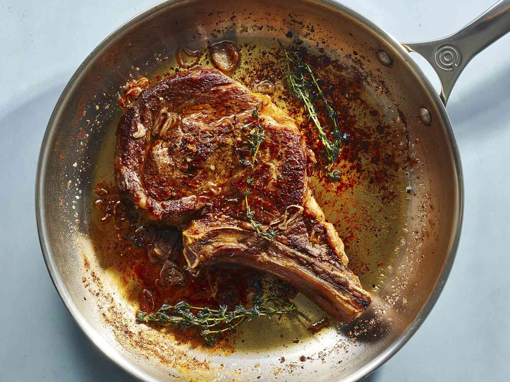

Pan Seared Steak

The following is a simple pan seared steak recipe that can be cooked in approximately thirty minutes.
Ingredients
- Filet mignon
- 2 tbsp olive oil
- One pinch of kosher salt
- One pinch of black pepper
- 2-3 knobs of butter (salted or unsalted)
- 2-3 rosemary stems
Steps
- Rest steaks at room temperature for 20-30 minutes.
- Season steaks with olive oil, kosher salt, and black pepper.
- Heat pan to medium high heat with a drizzle of olive oil.
- Place steak in pan for 3-4 minutes before flipping.
- Once flipped, add the butter and the rosemary to the pan and begin scooping the butter onto the steak for another 3-4 minutes.
- Remove the steaks from the pan and rest for 10 minutes.